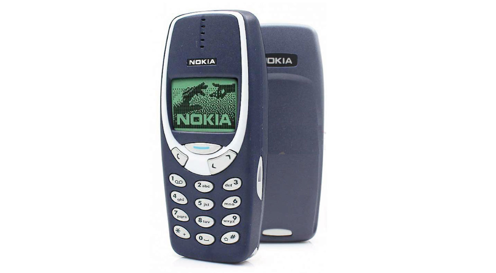
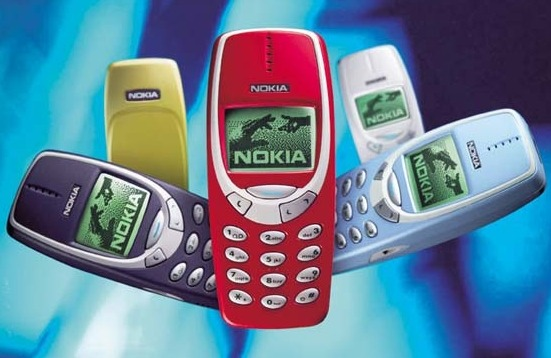
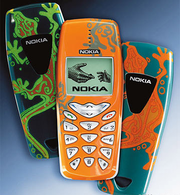

https://www.extremetech.com/mobile/244429-nokia-resurrecting-iconic-nokia-3310

http://forums.digitalspy.co.uk/showthread.php?t=1269978

https://forum.donanimhaber.com/kullandigimiz-telefonlari-yaziyoruz--65348151-10
The Nokia 3310 is a GSM mobile phone announced on September 1, 2000. The phone sold extremely well, being one of the most successful phones with 126 million units sold worldwide. The phone is still widely acclaimed today, and has gained a cult status due to its durability.
On 14 February 2017, it was reported that a modernised version of the 3310 would be unveiled at the 2017 Mobile World Congress by HMD Global Oy.